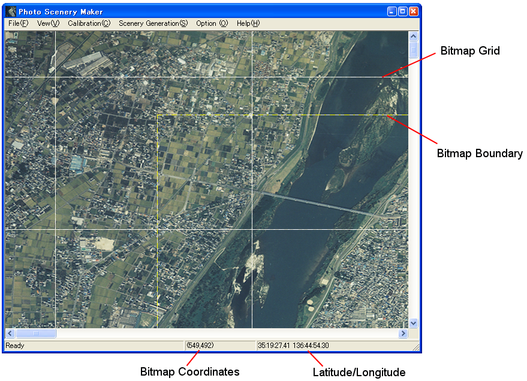

スクロールバーを使うか、ビットマップ上でマウスでドラッグして、 画像をスクロールすることができます。
「補正」メニューから「２点補正」を選ぶと、マウスカーソルが十字型になります。 目標となる１つめの点をクリックし、その点の緯度・経度を入力します。
緯度/経度のフォーマットは 'd:m:s' (度/分/秒)です。 南緯/西経を入力する場合は '-' をつけてください (例 : '-10:45:21.5')
また、浮動小数点数を使用することもできます (例 : '35.48163975')
続けて２つ目の点をクリックし、その点の緯度・経度を入力してください。
これで補正が完了します。以後、画面右下に、現在のマウスポインタの位置の緯度・経度が 表示されますので、確認してください。
この時点でいったんプロジェクトを保存したほうがいいでしょう。「ファイル」メニューから 「保存」を選んで保存してください。